Code
# run these every time you open Rstudio
library(tidyverse)
library(oibiostat)
library(janitor)
library(rstatix)
library(knitr)
library(gtsummary)
library(moderndive)
library(gt)
library(broom)
library(here)
library(pwr) # new-ishBSTA 511/611
# run these every time you open Rstudio
library(tidyverse)
library(oibiostat)
library(janitor)
library(rstatix)
library(knitr)
library(gtsummary)
library(moderndive)
library(gt)
library(broom)
library(here)
library(pwr) # new-ish.txt file.txt files are usually tab-deliminated files
.csv files are comma-separated filesread_delim is from the readr package, just like read_csvemploy <- read_delim(
file = here::here("data", "DisabilityEmployment.txt"),
delim = "\t", # tab delimited
trim_ws = TRUE)trim_ws: Should leading and trailing whitespace be trimmed from each field before parsing it?
summary(employ) disability score
Length:70 Min. :1.400
Class :character 1st Qu.:3.700
Mode :character Median :5.050
Mean :4.929
3rd Qu.:6.100
Max. :8.500 employ %>% tabyl(disability) disability n percent
amputee 14 0.2
crutches 14 0.2
hearing 14 0.2
none 14 0.2
wheelchair 14 0.2disability variable a factor variableglimpse(employ)Rows: 70
Columns: 2
$ disability <chr> "none", "none", "none", "none", "none", "none", "none", "no…
$ score <dbl> 1.9, 2.5, 3.0, 3.6, 4.1, 4.2, 4.9, 5.1, 5.4, 5.9, 6.1, 6.7,…employ <- employ %>%
mutate(disability = factor(disability))
glimpse(employ)Rows: 70
Columns: 2
$ disability <fct> none, none, none, none, none, none, none, none, none, none,…
$ score <dbl> 1.9, 2.5, 3.0, 3.6, 4.1, 4.2, 4.9, 5.1, 5.4, 5.9, 6.1, 6.7,…summary(employ) disability score
amputee :14 Min. :1.400
crutches :14 1st Qu.:3.700
hearing :14 Median :5.050
none :14 Mean :4.929
wheelchair:14 3rd Qu.:6.100
Max. :8.500 levels(employ$disability)[1] "amputee" "crutches" "hearing" "none" "wheelchair"employ <- employ %>%
mutate(
# make "none" the first level
# by only listing the level none, all other levels will be in original order
disability = fct_relevel(disability, "none"),
# change the level name amputee to amputation
disability = fct_recode(disability, amputation = "amputee")
)
levels(employ$disability) # note the new order and new name[1] "none" "amputation" "crutches" "hearing" "wheelchair"fct_relevel() and fct_recode() are from the forcats package: https://forcats.tidyverse.org/index.html. forcats is loaded with library(tidyverse).
ggplot(employ, aes(x=score)) +
geom_density() +
facet_wrap(~ disability)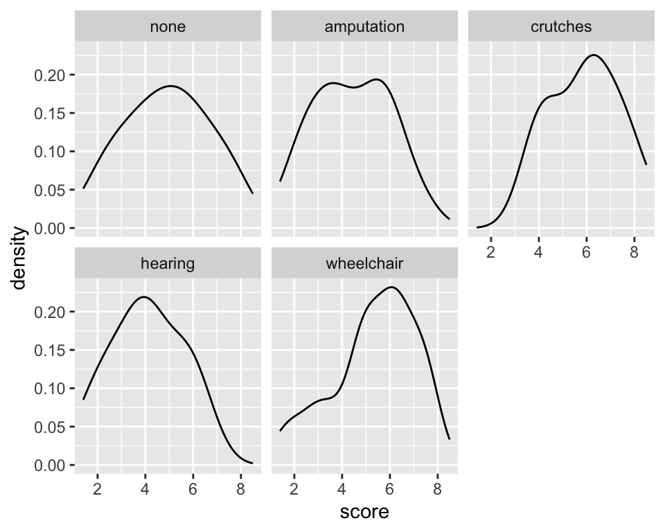
library(ggridges)
ggplot(employ,
aes(x=score,
y = disability,
fill = disability)) +
geom_density_ridges(alpha = 0.4) +
theme(legend.position="none")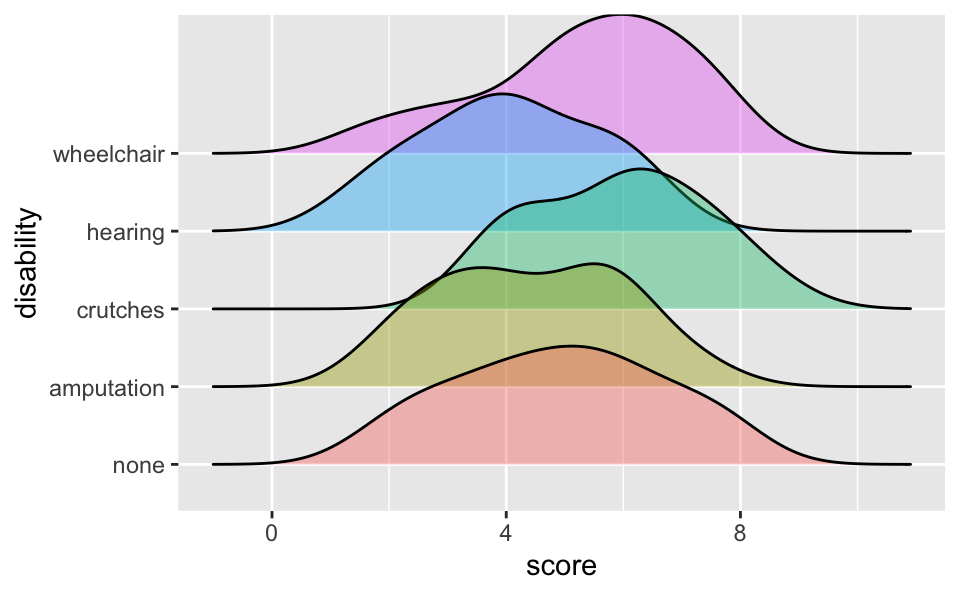
ggplot(employ, aes(y=score, x = disability,
fill = disability)) +
geom_boxplot(alpha =.3) +
coord_flip() +
geom_jitter(width =.1, alpha = 0.3) +
theme(legend.position = "none")ggplot(employ, aes(x = disability, y=score,
fill=disability, color=disability)) +
geom_dotplot(binaxis = "y", alpha =.5) +
geom_hline(aes(yintercept = mean(score)),
lty = "dashed") +
stat_summary(fun ="mean", geom="point",
size = 3, color = "grey33", alpha =1) +
theme(legend.position = "none")
To test for a difference in means across k treatment groups:
\[\begin{align} H_0 &: \mu_1 = \mu_2 = ... = \mu_k\\ \text{vs. } H_A&: \text{At least one pair } \mu_i \neq \mu_j \end{align}\]
Hypothetical examples:
In which set (A or B) do you believe the evidence will be stronger that at least one population differs from the others?
See slides
Whether or not two means are significantly different depends on: * How far apart the means are * How much variability there is within each treatment group
Questions:
* How to measure variability between treatment groups? * How to measure variability within treatment groups? * How to compare the two measures? * How to determine significance?
empl_lm <- lm(score ~ disability, data = employ)
anova(empl_lm)Analysis of Variance Table
Response: score
Df Sum Sq Mean Sq F value Pr(>F)
disability 4 30.521 7.6304 2.8616 0.03013 *
Residuals 65 173.321 2.6665
---
Signif. codes: 0 '***' 0.001 '**' 0.01 '*' 0.05 '.' 0.1 ' ' 1Hypotheses:
\[\begin{align} H_0 &: \mu_{none} = \mu_{amputation} = \mu_{crutches} = \mu_{hearing} = \mu_{wheelchair}\\ \text{vs. } H_A&: \text{At least one pair } \mu_i \neq \mu_j \end{align}\]
Do we reject or fail to reject \(H_0\)?
See slides
Analysis of Variance (ANOVA) compares the variability between treatments to the variability within treatments
\[\sum_{i = 1}^k \sum_{j = 1}^{n_i}(y_{ij} -\bar{y}_{..})^2 \ \ = \ \sum_{i = 1}^k n_i(\bar{y}_{i.}-\bar{y}_{..})^2 \ \ + \ \ \sum_{i = 1}^k\sum_{j = 1}^{n_i}(y_{ij}-\bar{y}_{i.})^2\]
| Observation | i = 1 | i = 2 | i = 3 | \(\ldots\) | i = k | overall |
|---|---|---|---|---|---|---|
| j = 1 | \(y_{11}\) | \(y_{21}\) | \(y_{31}\) | \(\ldots\) | \(y_{k1}\) | |
| j = 2 | \(y_{12}\) | \(y_{22}\) | \(y_{32}\) | \(\ldots\) | \(y_{k2}\) | |
| j = 3 | \(y_{13}\) | \(y_{23}\) | \(y_{33}\) | \(\ldots\) | \(y_{k3}\) | |
| j = 4 | \(y_{14}\) | \(y_{24}\) | \(y_{34}\) | \(\ldots\) | \(y_{k4}\) | |
| \(\vdots\) | \(\vdots\) | \(\vdots\) | \(\vdots\) | \(\ddots\) | \(\vdots\) | |
| j = \(n_i\) | \(y_{1n}\) | \(y_{2n}\) | \(y_{3n}\) | \(\ldots\) | \(y_{kn}\) | |
| Means | \(\bar{y}_{1.}\) | \(\bar{y}_{2.}\) | \(\bar{y}_{3.}\) | \(\ldots\) | \(\bar{y}_{k.}\) | \(\bar{y}_{..}\) |
| Variance | \({s}^2_{1.}\) | \({s}^2_{2.}\) | \({s}^2_{3.}\) | \(\ldots\) | \({s}^2_{k.}\) | \({s}^2_{..}\) |
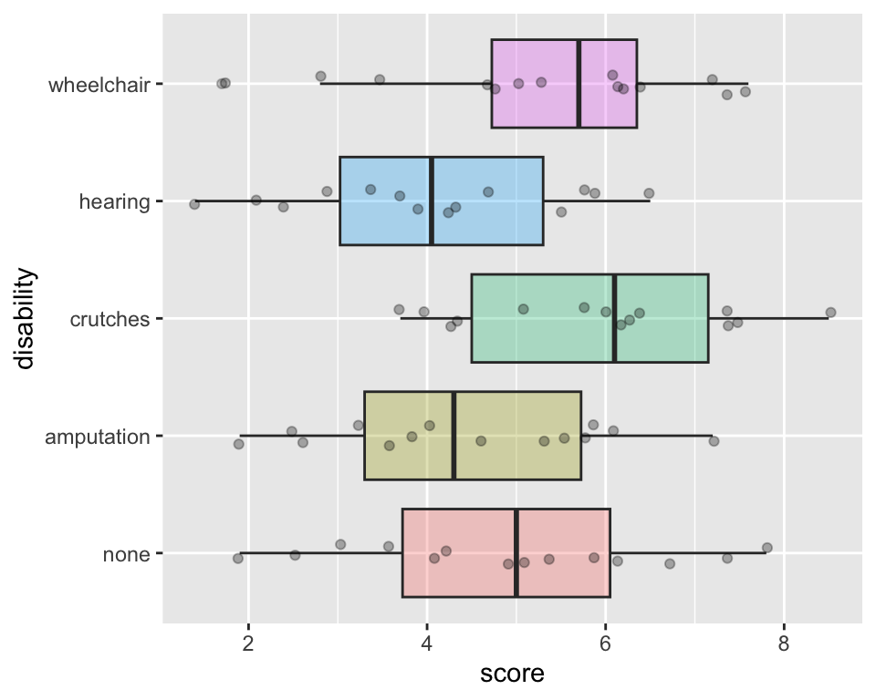
Total Sums of Squares:
\[\sum_{i = 1}^k \sum_{j = 1}^{n_i}(y_{ij} -\bar{y}_{..})^2 = (N-1)s^2_{..}\] where \(N=\sum_{i=1}^{k}n_i\) is the total sample size and \(s^2_{..}\) is the grand standard deviation of all the observations
This is the sum of the squared differences between each observed \(y_{ij}\) value and the grand mean, \(\bar{y}_{..}\).
That is, it is the total deviation of the \(y_{ij}\)’s from the grand mean.
Total Sums of Squares:
\[\sum_{i = 1}^k \sum_{j = 1}^{n_i}(y_{ij} -\bar{y}_{..})^2 = (N-1)s^2_{..}\] where \(N=\sum_{i=1}^{k}n_i\) is the total sample size and \(s^2_{..}\) is the grand standard deviation of all the observations
(Ns <- employ %>% group_by(disability) %>% count())# A tibble: 5 × 2
# Groups: disability [5]
disability n
<fct> <int>
1 none 14
2 amputation 14
3 crutches 14
4 hearing 14
5 wheelchair 14(SST <- (sum(Ns$n) - 1) * sd(employ$score)^2)[1] 203.8429ANOVA compares the variability between treatments to the variability within treatments
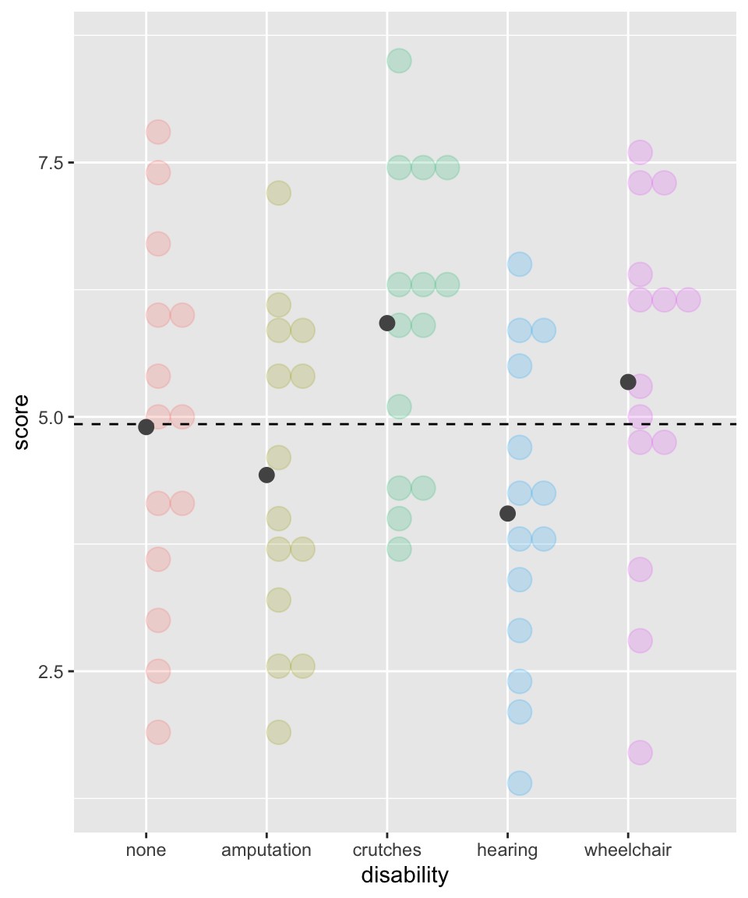
Sums of Squares due to Treatments:
\[SSTr = \sum_{i = 1}^k n_i(\bar{y}_{i.}-\bar{y}_{..})^2\]
This is the sum of the squared differences between each treatment mean, \(\bar{y}_{i.}\), and the grand mean, \(\bar{y}_{..}\).
That is, it is the deviation of the treatment means from the grand mean.
Also called the Model SS, or \(SS_{model}.\)
Sums of Squares due to Treatments:
\[SSTr = \sum_{i = 1}^k n_i(\bar{y}_{i.}-\bar{y}_{..})^2\]
xbar_groups <- employ %>%
group_by(disability) %>%
summarise(mean = mean(score))
xbar_groups# A tibble: 5 × 2
disability mean
<fct> <dbl>
1 none 4.9
2 amputation 4.43
3 crutches 5.92
4 hearing 4.05
5 wheelchair 5.34(SSTr <- 14*sum(
(xbar_groups$mean - mean(employ$score))^2))[1] 30.52143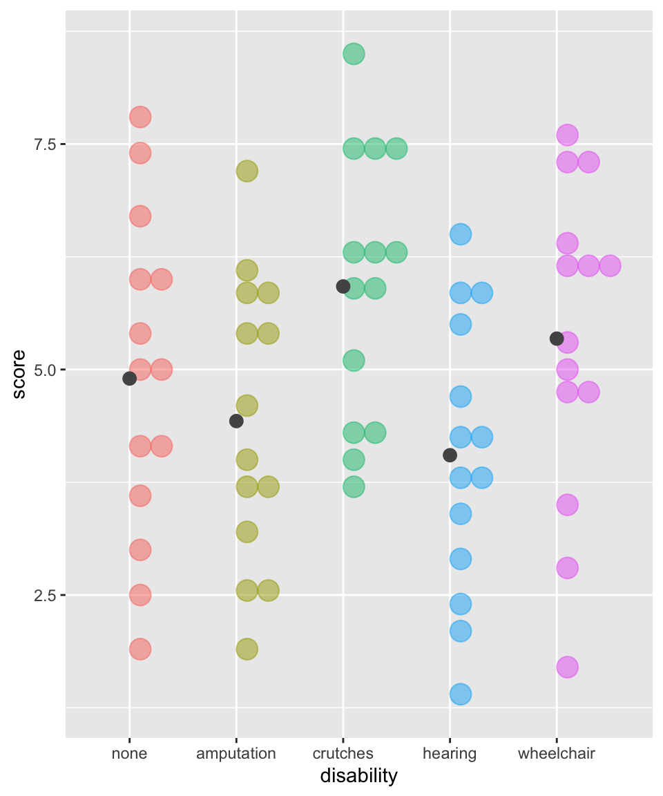
Sums of Squares Error:
\[SSE = \sum_{i = 1}^k\sum_{j = 1}^{n_i}(y_{ij}-\bar{y}_{i.})^2 = \sum_{i = 1}^k(n_i-1)s_{i.}^2\] where \(s_{i.}\) is the standard deviation of the \(i^{th}\) treatment
This is the sum of the squared differences between each observed \(y_{ij}\) value and its treatment mean \(\bar{y}_{i.}\).
That is, it is the deviation of the \(y_{ij}\)’s from the predicted score by treatment.
Also called the residual sums of squares, or \(SS_{residual}.\)
Sums of Squares Error:
\[SSE = \sum_{i = 1}^k\sum_{j = 1}^{n_i}(y_{ij}-\bar{y}_{i.})^2 = \sum_{i = 1}^k(n_i-1)s_{i.}^2\] where \(s_{i.}\) is the standard deviation of the \(i^{th}\) treatment
sd_groups <- employ %>%
group_by(disability) %>%
summarise(SD = sd(score))
sd_groups# A tibble: 5 × 2
disability SD
<fct> <dbl>
1 none 1.79
2 amputation 1.59
3 crutches 1.48
4 hearing 1.53
5 wheelchair 1.75(SSE <- sum(
(14-1)*sd_groups$SD^2))[1] 173.3214ANOVA compares the variability between treatments to the variability within treatments
\[\sum_{i = 1}^k \sum_{j = 1}^{n_i}(y_{ij} -\bar{y}_{..})^2 \ \ = \ \ n_i\sum_{i = 1}^k(\bar{y}_{i.}-\bar{y}_{..})^2 \ \ + \ \ \sum_{i = 1}^k\sum_{j = 1}^{n_i}(y_{ij}-\bar{y}_{i.})^2\]
\[(N-1)s^2_{..} \ \ = \ \sum_{i = 1}^k n_i(\bar{y}_{i.}-\bar{y}_{..})^2 \ \ + \ \ \sum_{i = 1}^k(n_i-1)s_{i.}^2\]
SST[1] 203.8429SSTr + SSE[1] 203.8429If the treatments are actually different, then which of these is more accurate?
If there really is a difference between the treatments, we would expect the F-statistic to be which of these:
\[F = \frac{MSG}{MSE}\]
empl_lm <- lm(score ~ disability, data = employ)
tidy(anova(empl_lm))# A tibble: 2 × 6
term df sumsq meansq statistic p.value
<chr> <int> <dbl> <dbl> <dbl> <dbl>
1 disability 4 30.5 7.63 2.86 0.0301
2 Residuals 65 173. 2.67 NA NA Hypotheses:
\[\begin{align} H_0 &: \mu_{none} = \mu_{amputation} = \mu_{crutches} = \mu_{hearing} = \mu_{wheelchair}\\ \text{vs. } H_A&: \text{At least one pair } \mu_i \neq \mu_j \end{align}\]
Do we reject or fail to reject \(H_0\)?
\[\begin{align} H_0 &: \mu_{none} = \mu_{amputation} = \mu_{crutches} = \mu_{hearing} = \mu_{wheelchair}\\ \text{vs. } H_A&: \text{At least one pair } \mu_i \neq \mu_j \end{align}\]
tidy(anova(empl_lm)) # cleaner anova output# A tibble: 2 × 6
term df sumsq meansq statistic p.value
<chr> <int> <dbl> <dbl> <dbl> <dbl>
1 disability 4 30.5 7.63 2.86 0.0301
2 Residuals 65 173. 2.67 NA NA round(broom::tidy(anova(empl_lm))$p.value[1],2)[1] 0.03Conclusion statement: * There is sufficient evidence that at least one of the disability groups has a mean employment score statistically different from the other groups. ( \(p\)-value = 0.03).
IF the following conditions hold:
THEN the sampling distribution of the
F-statistic is an F-distribution
Checking the equal variance assumption:
sd_groups # previously defined# A tibble: 5 × 2
disability SD
<fct> <dbl>
1 none 1.79
2 amputation 1.59
3 crutches 1.48
4 hearing 1.53
5 wheelchair 1.75max(sd_groups$SD) / min(sd_groups$SD)[1] 1.210425Bartlett’s test for equal variances
_Note: \(H_A\) is same as saying that at least one of the treatment levels has a different variance__
bartlett.test(score ~ disability, data = employ)
Bartlett test of homogeneity of variances
data: score by disability
Bartlett's K-squared = 0.7016, df = 4, p-value = 0.9511The F-distribution is skewed right:
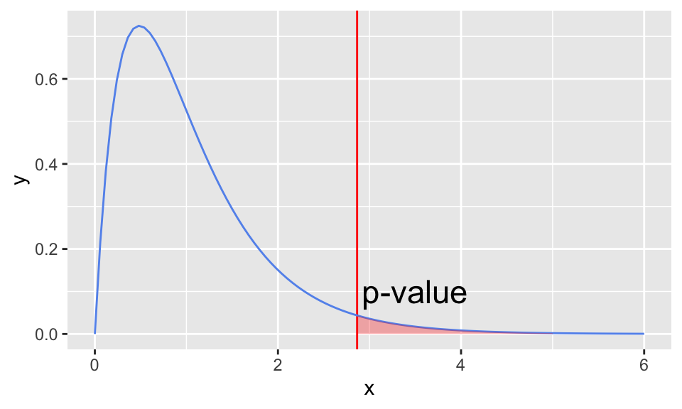
The F-distribution has two degrees of freedom:
\(p\)-value:
For F-statistics, the p-value (the area as extreme or more extreme) is always the upper tail.
# p-value using F-distribution
pf(2.8646, df1=5-1, df2=70-5,
lower.tail = FALSE)[1] 0.02999488So far we’ve only determined that at least one of the treatment groups is different from the others, but we don’t know which.
What’s your guess?
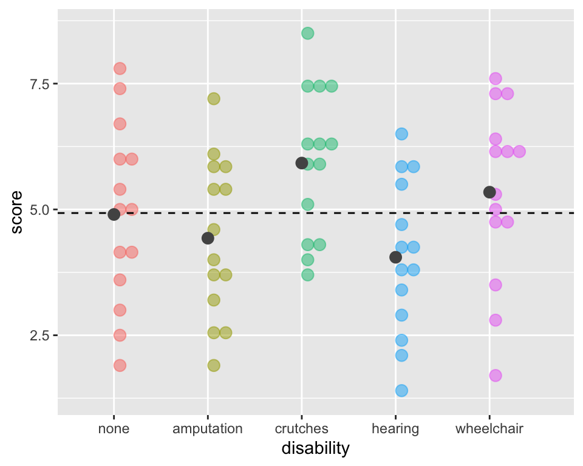
Problem:
Although test has an \(\alpha\) chance of a Type I error (finding a difference between a pair that aren’t different), the overall Type I error rate will be much higher when running many tests simultaneously.
\[\begin{align} P(\text{making an error}) = & \alpha\\ P(\text{not making an error}) = & 1-\alpha\\ P(\text{not making an error in m tests}) = & (1-\alpha)^m\\ P(\text{making at least 1 error in m tests}) = & 1-(1-\alpha)^m \end{align}\]
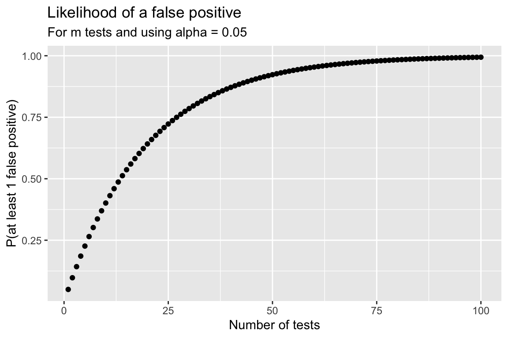
A very conservative (but very popular) approach is to divide the \(\alpha\) level by how many tests \(m\) are being done:
\[\alpha_{Bonf} = \frac{\alpha}{m}\]
\[p\textrm{-value} < \alpha_{Bonf} = \frac{\alpha}{m}\] is the same as \[m \cdot (p\textrm{-value}) < \alpha\] The Bonferroni correction is popular since it’s very easy to implement.
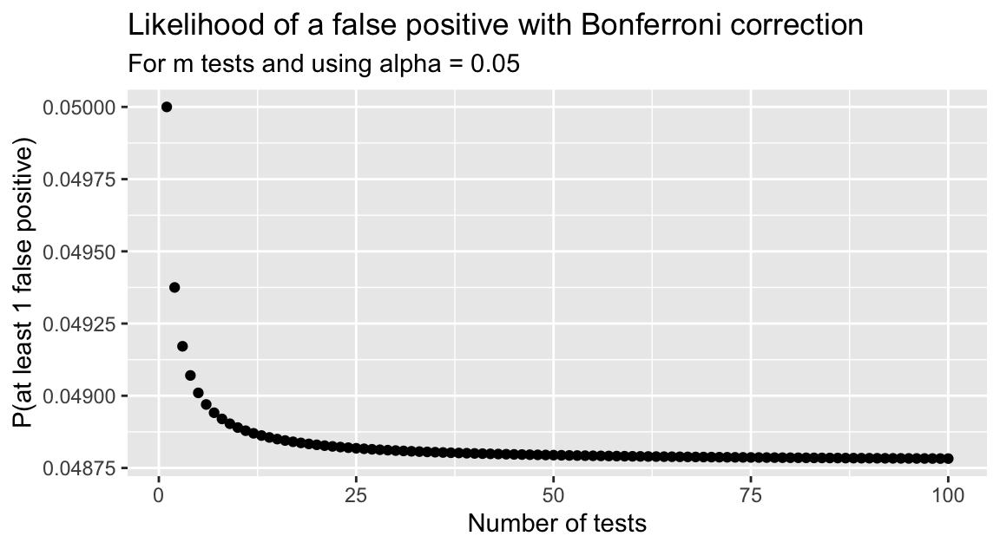
Pairwise t-tests without any p-value adjustments:
pairwise.t.test(employ$score,
employ$disability,
p.adj="none")
Pairwise comparisons using t tests with pooled SD
data: employ$score and employ$disability
none amputation crutches hearing
amputation 0.4477 - - -
crutches 0.1028 0.0184 - -
hearing 0.1732 0.5418 0.0035 -
wheelchair 0.4756 0.1433 0.3520 0.0401
P value adjustment method: none Pairwise t-tests with Bonferroni p-value adjustments:
pairwise.t.test(employ$score,
employ$disability,
p.adj="bonferroni")
Pairwise comparisons using t tests with pooled SD
data: employ$score and employ$disability
none amputation crutches hearing
amputation 1.000 - - -
crutches 1.000 0.184 - -
hearing 1.000 1.000 0.035 -
wheelchair 1.000 1.000 1.000 0.401
P value adjustment method: bonferroni Since there were 10 tests, all the p-values were multiplied by 10.
The function TukeyHSD() creates a set of confidence intervals on the differences between means with the specified family-wise probability of coverage.
# need to run the model as an `aov` instead of `lm`
empl_aov <- aov(score ~ disability, data = employ)
anova(empl_aov) Analysis of Variance Table
Response: score
Df Sum Sq Mean Sq F value Pr(>F)
disability 4 30.521 7.6304 2.8616 0.03013 *
Residuals 65 173.321 2.6665
---
Signif. codes: 0 '***' 0.001 '**' 0.01 '*' 0.05 '.' 0.1 ' ' 1Both Tukey HSD p-values and CI’s for all pairwise differences.
TukeyHSD(x=empl_aov, conf.level = 0.95) Tukey multiple comparisons of means
95% family-wise confidence level
Fit: aov(formula = score ~ disability, data = employ)
$disability
diff lwr upr p adj
amputation-none -0.4714286 -2.2031613 1.2603042 0.9399911
crutches-none 1.0214286 -0.7103042 2.7531613 0.4686233
hearing-none -0.8500000 -2.5817328 0.8817328 0.6442517
wheelchair-none 0.4428571 -1.2888756 2.1745899 0.9517374
crutches-amputation 1.4928571 -0.2388756 3.2245899 0.1232819
hearing-amputation -0.3785714 -2.1103042 1.3531613 0.9724743
wheelchair-amputation 0.9142857 -0.8174470 2.6460185 0.5781165
hearing-crutches -1.8714286 -3.6031613 -0.1396958 0.0277842
wheelchair-crutches -0.5785714 -2.3103042 1.1531613 0.8812293
wheelchair-hearing 1.2928571 -0.4388756 3.0245899 0.2348141plot(TukeyHSD(x=empl_aov, conf.level = 0.95))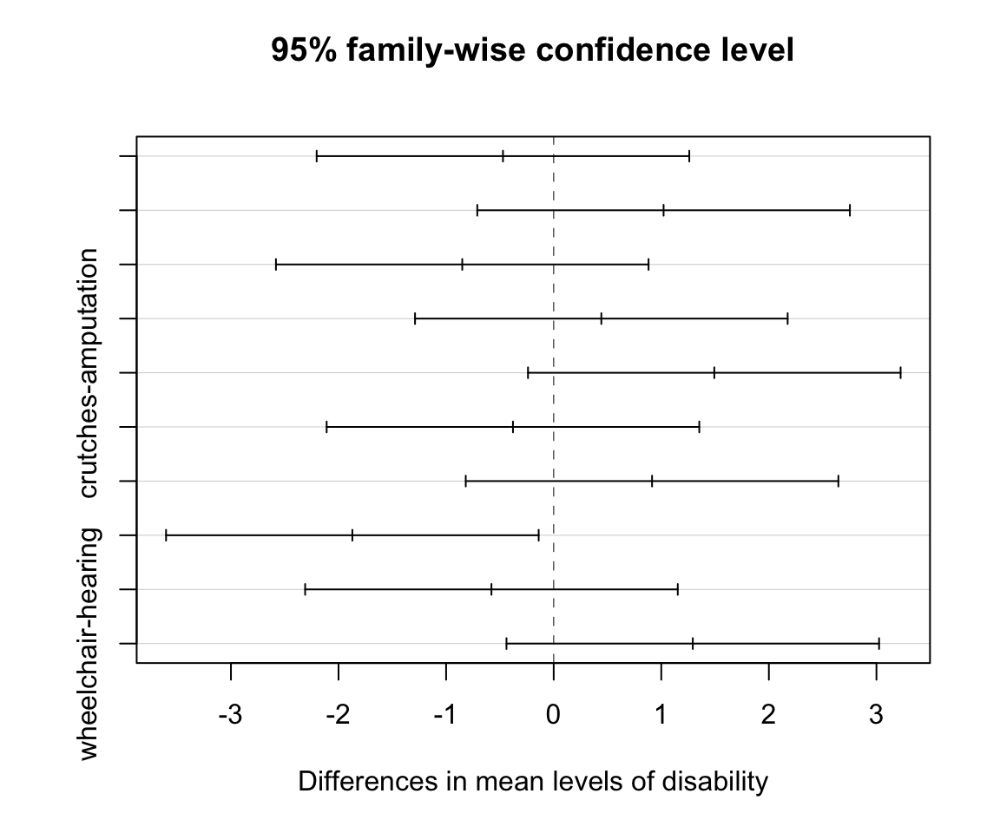
Visualization of pairwise CI’s
Which pair(s) of disabilities are significant after Tukey’s adjustments?
# default is Holm's adjustments
pairwise.t.test(employ$score,
employ$disability)
Pairwise comparisons using t tests with pooled SD
data: employ$score and employ$disability
none amputation crutches hearing
amputation 1.000 - - -
crutches 0.719 0.165 - -
hearing 0.866 1.000 0.035 -
wheelchair 1.000 0.860 1.000 0.321
P value adjustment method: holm Pairwise t-tests with false discovery rate (fdr) p-value adjustments (popular in omics):
pairwise.t.test(employ$score,
employ$disability,
p.adj="fdr")
Pairwise comparisons using t tests with pooled SD
data: employ$score and employ$disability
none amputation crutches hearing
amputation 0.528 - - -
crutches 0.257 0.092 - -
hearing 0.289 0.542 0.035 -
wheelchair 0.528 0.287 0.503 0.134
P value adjustment method: fdr post-hoc testing vs. testing many outcomes
Problem:
Although test has an \(\alpha\) chance of a Type I error (finding a difference between a pair that aren’t different), the overall Type I error rate will be much higher when running many tests simultaneously.
\[\begin{align} P(\text{making an error}) = & \alpha\\ P(\text{not making an error}) = & 1-\alpha\\ P(\text{not making an error in m tests}) = & (1-\alpha)^m\\ P(\text{making at least 1 error in m tests}) = & 1-(1-\alpha)^m \end{align}\]
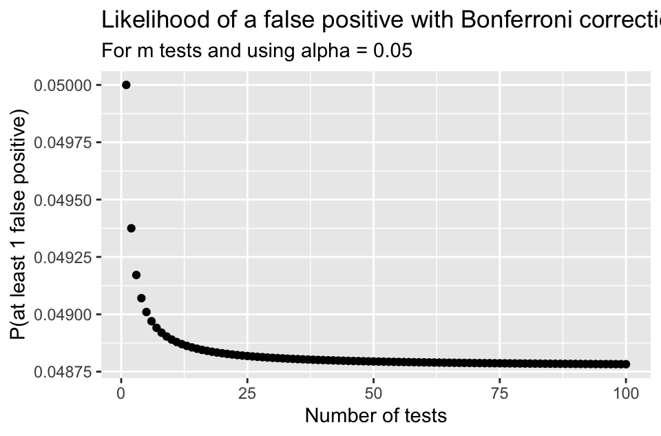